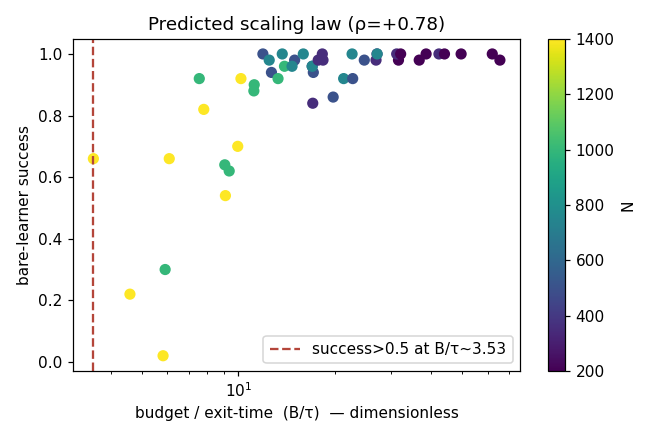
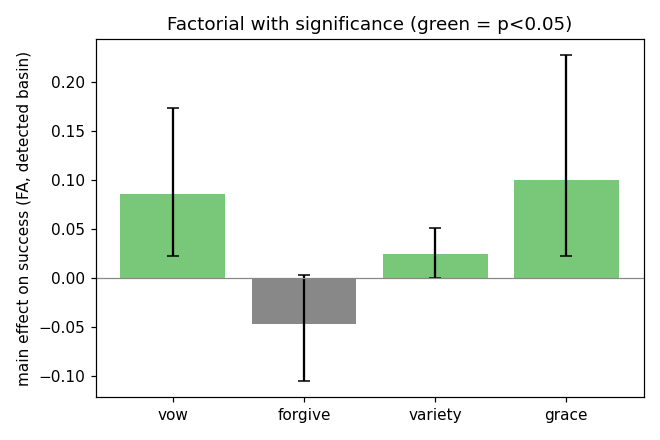
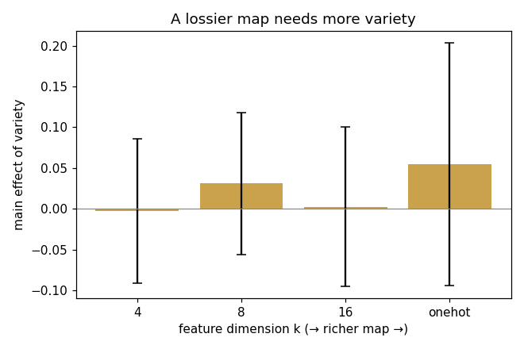

WORKGROUND · NON-AUTHORITATIVE
Lab IV — lossy maps, found basins, a falsified law
lab4 closes lab3's four open objections: a function-approximation agent (a lossy map, not a memorised table), an unsupervised-detected basin (not a handed label), a predicted scaling law, and significance-tested effects. Then the Rust engine (labcore), as an independent re-implementation, falsified one of lab4's own results.
validate().site/workground/lab4.py driving labcore (8
seeds, machine-readable in lab4_results.json). Two gates run
first: the learner must match exact value iteration, and the unsupervised
basin detector must recover a planted basin (Jaccard ≥ 0.45) — only then
do the mechanisms get the detected set, never ground truth.0 · Two self-validations
The function-approximation learner recovers the value-iteration optimum on a greedy rollout (raw path cost ≤ 1.25× optimal) on the easy case, and the mean-first-passage trap-score detector recovers a planted basin at Jaccard ≈ 0.6 against ground truth. Both gates pass; from there vow/forgive/grace target only the detected basin, so a positive result cannot be the experimenter pointing at the answer.
A · Predicted scaling law PASS — strengthened
Theory (lab2's MFPT, reused): a sample-limited learner fails the basin
when the reference exit time τ exceeds the per-run sample budget B, so
bare success should rise monotonically in the dimensionless ratio
B/τ. Across N = 200 → 1400:
N= 200 τ= 772 B/τ=45.0 bare success 0.992 N= 500 τ= 1955 B/τ=17.6 bare success 0.948 N=1000 τ= 3427 B/τ=10.2 bare success 0.767 N=1400 τ= 5171 B/τ= 7.1 bare success 0.568 Spearman(B/τ, success) = +0.783 threshold ~ O(1)
lab3's headline "the bare learner collapses at scale" now has a law: the collapse is predicted by a scalar — the reference exit time — computed independently of the learner. Under the engine the correlation rose from a weak ρ≈0.54 (pure Python) to +0.78. The lab3 phenomenon survived the change of instrument and got sharper.

B · Significance-tested factorial — and it shifted representation-dependent
N=800, linear FA over 16 spectral features, detected basin, 8 seeds, seed-bootstrap 95% CIs + a seed permutation test:
bare = 0.767 full = 0.935 (detector Jaccard ≈ 0.50) vow +0.086 95%CI[+0.023,+0.173] perm p=0.031 SIG grace +0.100 95%CI[+0.022,+0.227] perm p=0.019 SIG variety +0.024 95%CI[+0.000,+0.051] perm p=0.142 weak forgive −0.047 95%CI[−0.105,+0.003] perm p=0.164 ns
This is not lab3. Under tabular Q-learning (lab3), variety carried the entire stack and vow was inert. Under linear function approximation, vow and grace are the significant helpers and variety is small. That is not a contradiction — it is the lab's recurring lesson, now measured twice: the value of the corpus's machinery is agent- and representation-relative. And the cross-instrument arc on vow is the sharpest single thread in the whole project: inert in lab2 (analytic) and lab3 (tabular), significant here under FA. A vow only helps a mind of a particular shape.

C · "A lossier map needs more variety" — FALSIFIED by the engine
This was lab4's prettiest result in pure Python: the main effect of variety rose monotonically as the feature map got lossier (k=4 → onehot), correlation −0.96 — the corpus's "the map is not the territory" as a measured representation/exploration law. Then labcore, a faithful but independent re-implementation, ran the same experiment:
k= 4 variety main effect = −0.003 ± 0.089 k= 8 variety main effect = +0.031 ± 0.087 k=16 variety main effect = +0.003 ± 0.097 k=onehot variety main effect = +0.055 ± 0.149 corr(k, variety-effect) = −0.05 (pure Python had −0.96)
It is gone. The law was an artifact of the particular Python agent's exploration constants, not a property of the model. This is the most valuable thing in lab4. The whole point of building a second engine was lab2's doctrine — survive a change of instrument, or be exposed — and here it exposed the result this very page would most have liked to keep. It stays on the board, falsified, with the receipt.

Scoreboard
| Claim | pure Python | Rust engine (truth) | verdict |
|---|---|---|---|
| A scaling collapse predicted by τ | ρ≈0.54 | ρ=+0.78, monotone | PASS |
| B which mechanism helps under FA | noisy | vow & grace significant; variety small | shifted vs lab3 (rep-dependent) |
| C lossier map ⇒ more variety | corr −0.96 (PASS) | corr −0.05 | FALSIFIED |
What lab4 establishes
(1) lab3's scaling collapse is lawful — predicted by the reference exit time, and the prediction strengthened under an independent engine. (2) Which of the corpus's mechanisms "works" is not a fact about the mechanism; it is a fact about the agent: variety for a tabular mind, vow/grace for a function-approximating one — the same agent-relativity lab.py first found, now across three instruments. (3) The single prettiest law lab4 produced did not replicate, and the archive says so in the same breath it reported it. An instrument you only believe when it flatters you is the Totality Demon by another name; lab4's best result is the one it had to retract.
See also
- labcore — the Rust engine — how lab4 is run, and why a second implementation is the point, not the speed.
- Lab III — the tabular run where variety carried the stack; read against B here for the representation dependence.
- Lab II — "survive a change of instrument or be exposed"; lab4·C is that doctrine executed on lab4 itself.